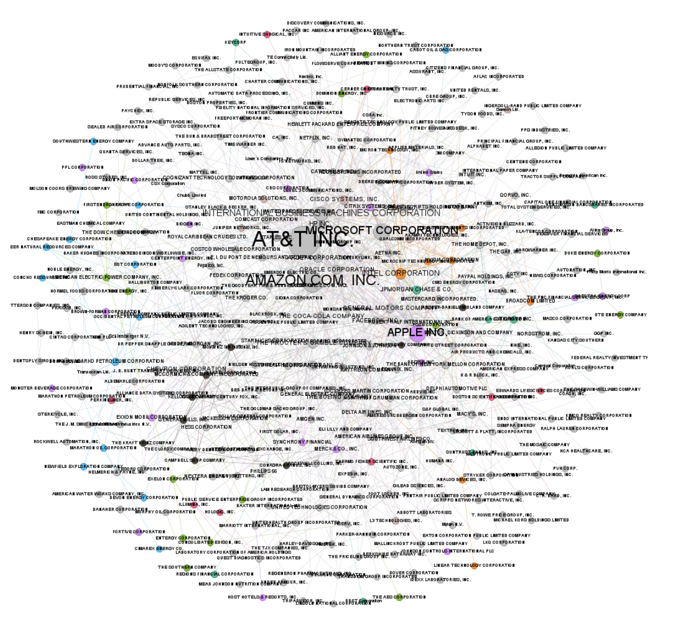
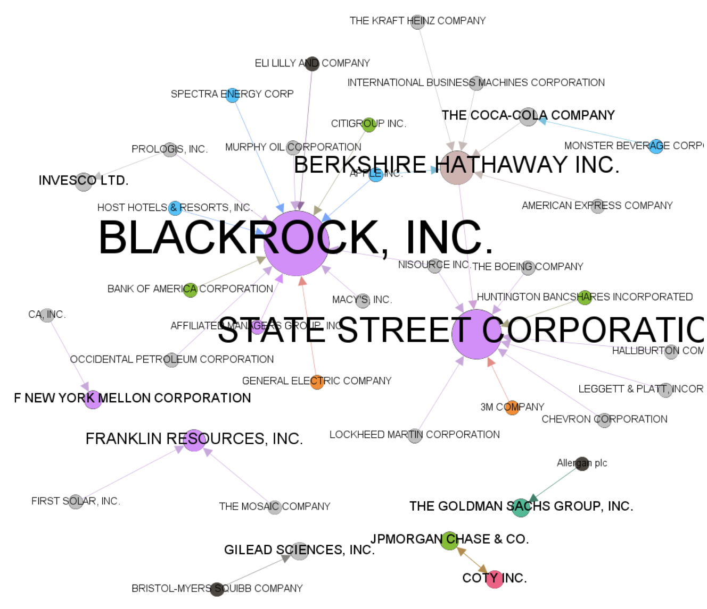
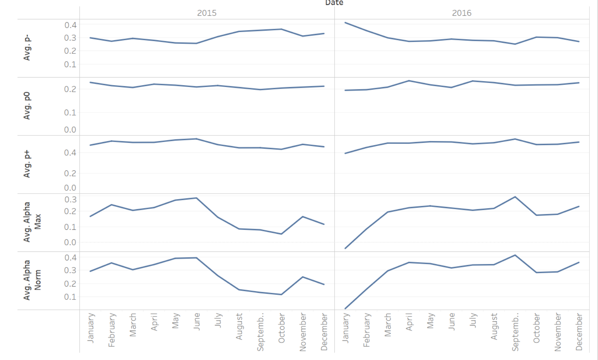
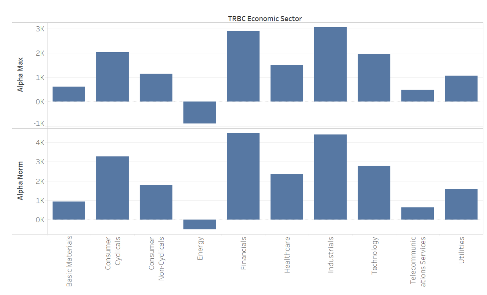
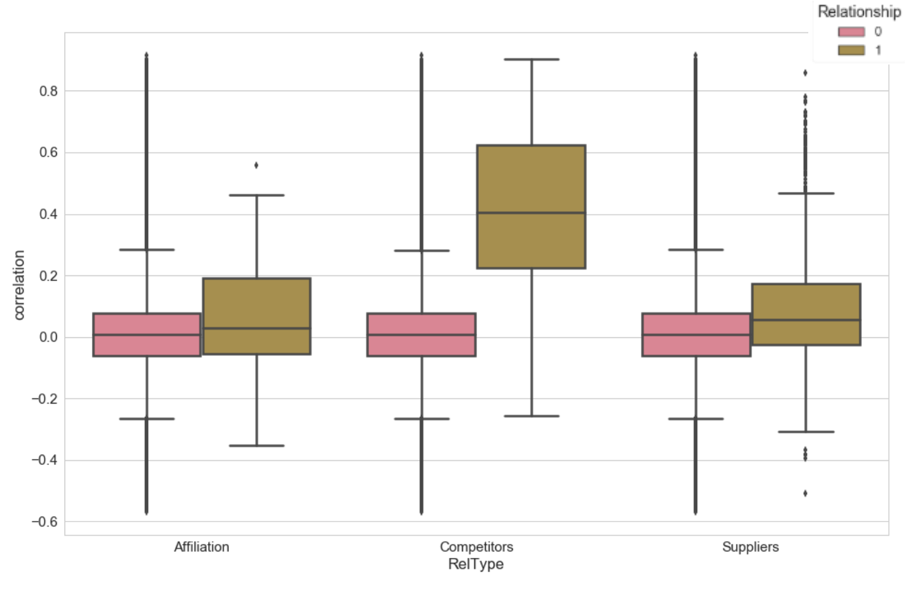
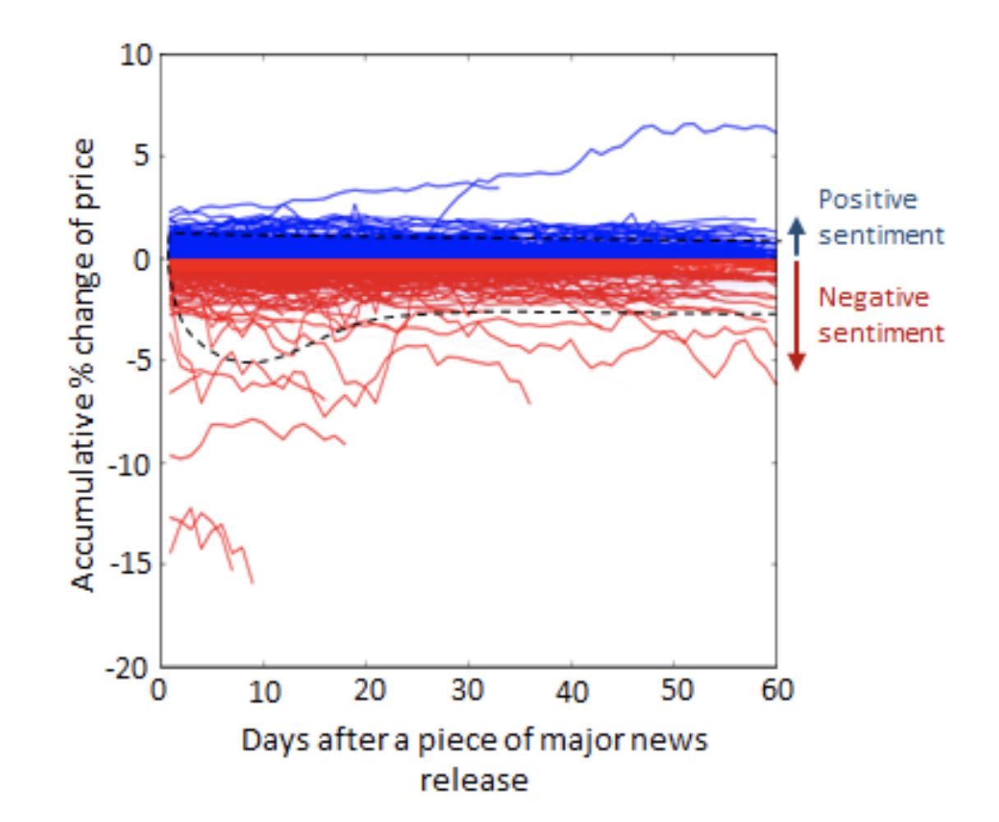
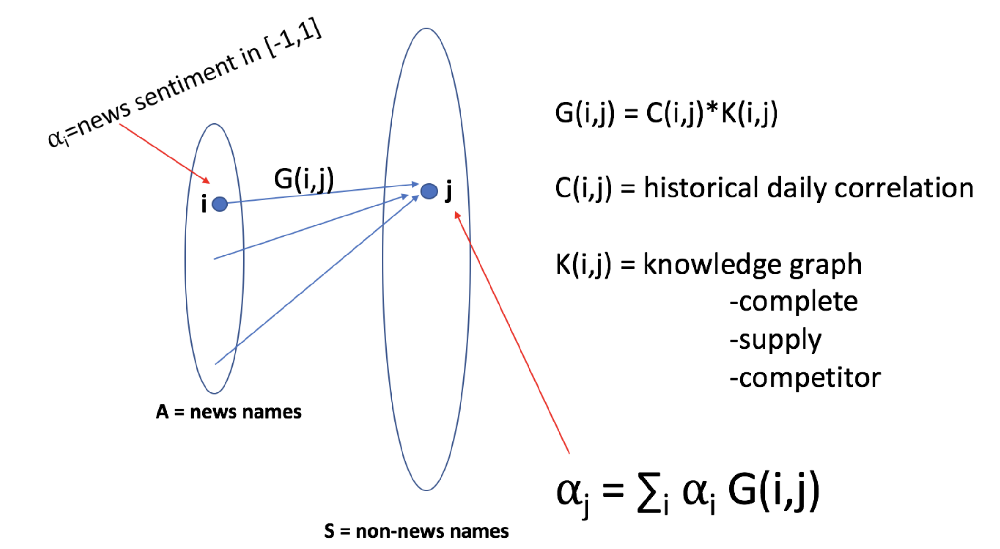
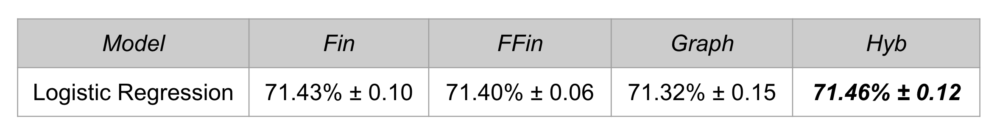

Predictive graph analysis for investment portfolio
Tania Allard | 1st February 2018
Problem statement
- How does news sentiment correlate with company stock returns
- How does news sentiment propagate through the network?
- Are certain relations affected more than others?
Part1: Getting to know the data
Three different data sources were used:
- Financial*
- News sentiment**
- Knowledge graph*
* Collected using the partner APIs
** Provided by the partner
More about the data
Subsetting the data:
S&P 500 companies
2014-2016
Financial data
- Date
- Company ID
- Open stock price
- Close stock price
- Volume
News sentiment
- Date
- Company ID
- Sentiment score [-1, 1]
Knowledge graph
- Company ID-1
- Company ID-2
- Link or relationship between companies
Exploring the data
Suppliers network in the S&P 500

Exploring the data
Suppliers network in the S&P 500

Overall sentiment

- Sentiment mostly negative at the beginning of 2015 and
first quarter of 2016
- Mostly positive around the beginning of the fourth
quarter of 2016
Overall sentiment
S&P500 companies in the energy sector have an overall negative
sentiment over the period 2015-2016

Financial correlations
The competitor relationships discriminate most companies that are
financially related from others

Timescale of the impact of a major news
Positive news have short-term and small impact
Negative news have long-term and large impact

Propagation of news throughout the network

Future company return prediction
- One way of assessing value from the graph information is by
establishing a prediction task which could depend on the graph
information
- Understanding the effect of news on the companies for which
the which is relevant, as well as the rest
Future company return prediction
Company representation example
- Fin: Only Financial Data
- FFin: Financial Data Filtered
- Graph: Only Graph Information
- Hyb: Hybrid
Results
5-fold Cross validation
258,000 training examples

- he results suggest that the graph information is
capturing enough and complementary information to that found
in the financial history
- It would be interesting to find the predictions after specific
events and analyze the outputs for related companies
Conclusions
- News sentiment can predict stock returns
- The Competitor relation in the graph is associated to
significant increase of correlation between companies
- We have found little evidence to suggest that the graph
information helps improve predictions based on sentiment and
financial data--but can substitute correlations.
- A simple linear model using financial data, news sentiment
data and correlations among companies is a good predictor for
the movement of a stock.
What else?
- Take into account the novelty of the news (?)
- Refine the classification -> are any other models more suitable
- Test the classifiers on novel data